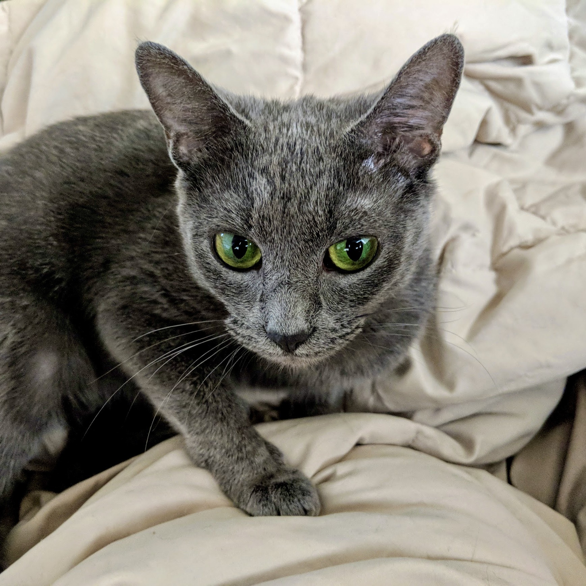
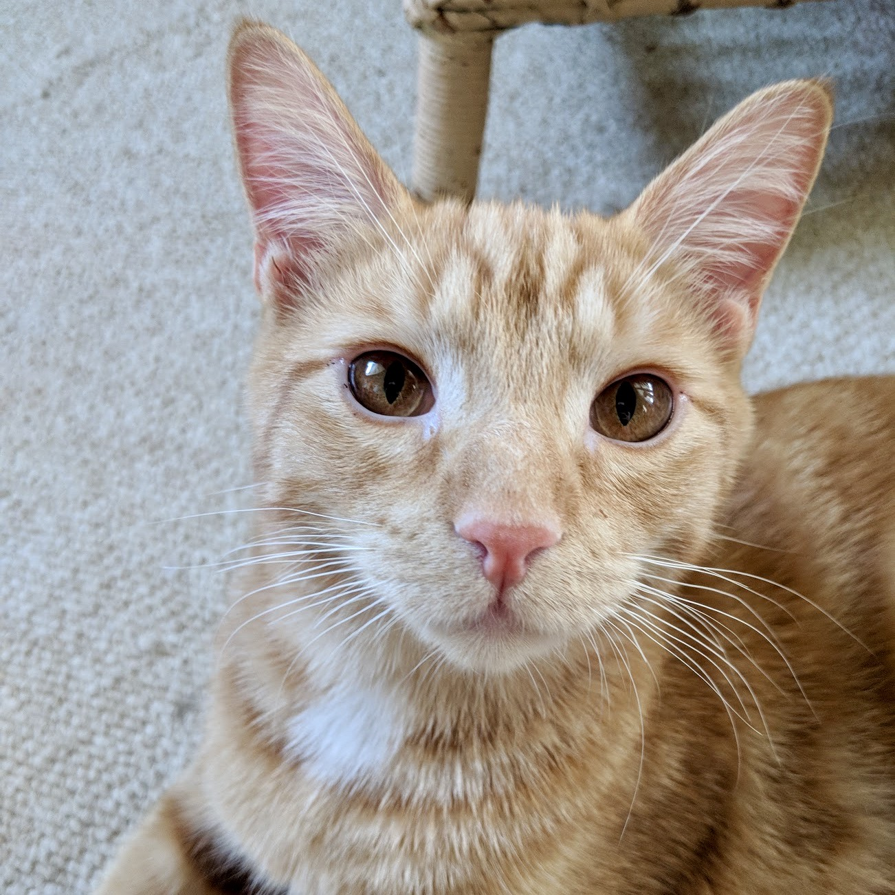
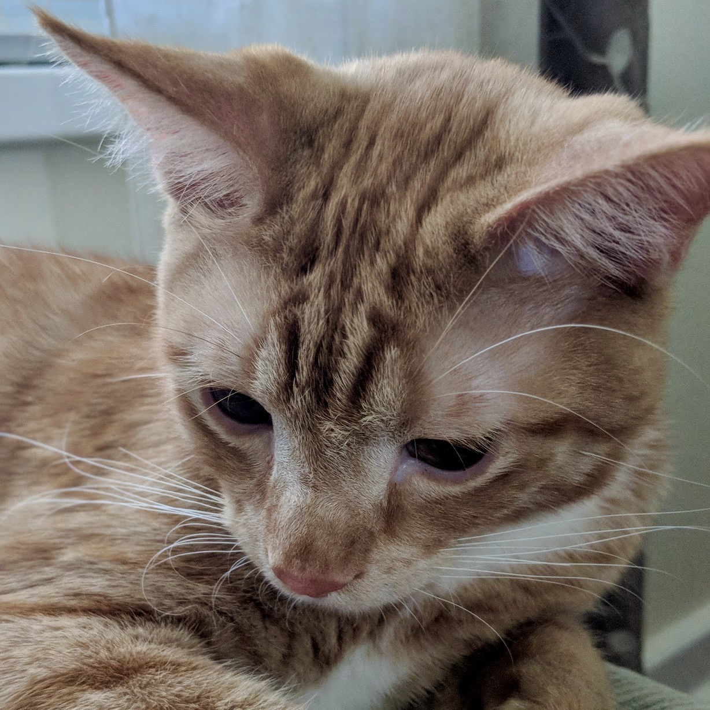

Sweet Thing is a Russian Blue rescue cat who literally screamed her way into her foster's home. She meowed until a human came outside, then immediately walked over and climbed into the human's lap. If you're looking for the perfect companion to watch movies with, Sweet Thing is the kitty for you.

Squirt was part of a litter of barn cats, who were all rehomed, but don't let his name fool you - he outgrew his brother Mittens in no time. He is a giant love bug who loves nothing more than trying to share a meal with his humans. He even brings his own glass to the party, stealing cups from the bathroom and home decor. When you're cooking dinner, he stretches as far up to the counter as he can to see if you're following the recipe. If you're looking for a household helper, Squirt is the kitty for you.

Mittens is Squirt's brother, part of a litter of barn cats who were rehomed. He is into sustainability. Just give him the ring off the milk jug and he'll play fetch with you. He can be a little shy, but if he's with his brother, they will entertain you with their full-contact wrestling. If you're looking for the strong, silent type, Mittens is the kitty for you.